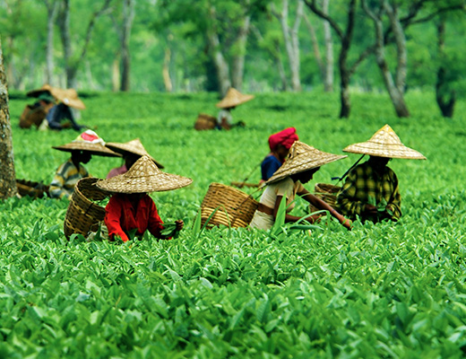
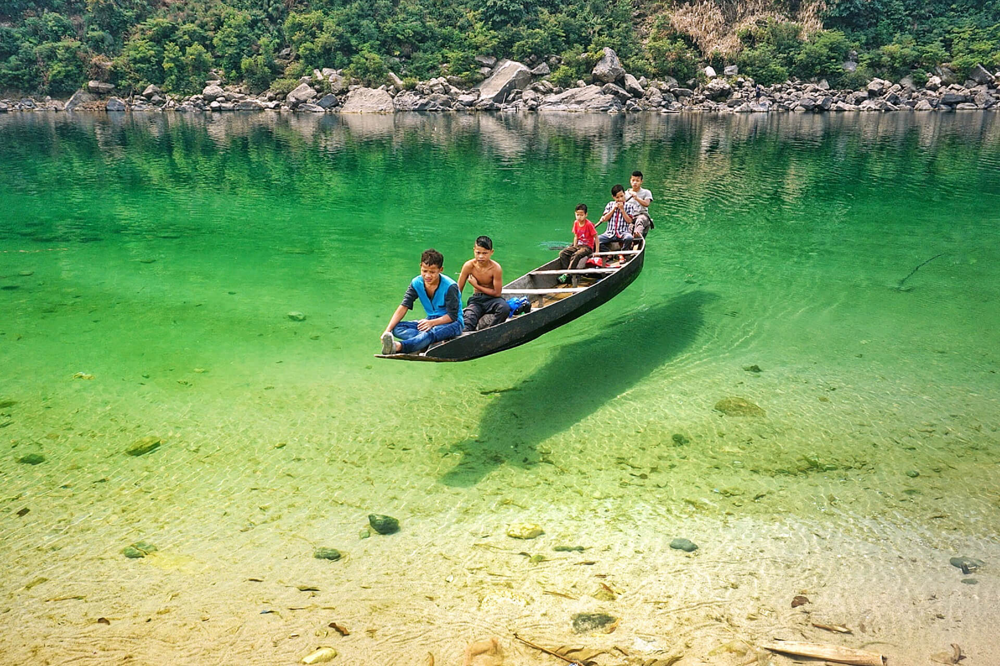

India's North East, called the land of the seven sisters, is a region which can be best described as virgin,
wild and untouched from the modernizations taking else where in the world. It is a region guarded by mountains,
the only passage being a narrow stretch of land some 30 km wide, called the Siliguri Corridor. Beyond this
corridor lies the seven sister states of North-Eastern India, each state more beautiful than the other,
each with its own cultures and beliefs, each having its own charm. To compare them is unwise, and to travel
them is paradise. Because of the regions inaccessibility from the rest of world, it has been lucky enough to
keep industrialization and modernization at bay, providing clean unpolluted air and a very rich natural habitat.
India's North East, called the land of the seven sisters, is a region which can be best described as virgin,
wild and untouched from the modernizations taking else where in the world. It is a region guarded by mountains,
the only passage being a narrow stretch of land some 30 km wide, called the Siliguri Corridor. Beyond this
corridor lies the seven sister states of North-Eastern India, each state more beautiful than the other,
each with its own cultures and beliefs, each having its own charm. To compare them is unwise, and to travel
them is paradise. Because of the regions inaccessibility from the rest of world, it has been lucky enough to
keep industrialization and modernization at bay, providing clean unpolluted air and a very rich natural habitat.

ASSAM
The state of Assam lies in the north eastern part of India. It is a land which is filled with blankets of tea plantation
and wild forests. The mighty river Brahmaputra cuts across the state, providing for the general need of food and water
of the local population, and has also created a breath-taking landscape. The capital of the state is Dispur and the largest
city is Guwahati, which is also one of the fastest growing cities of the world. Assam is famous for its world class tea,
oil and petroleum resources, muga silk and a very rich bio diversity. The monsoons bless the region with a lot of rainfall,
allowing for lush green landscapes to flourish. The region is listed among the top bio-diversity hotspots of the world.

NAGALAND
There is great religious and ethnic diversity within the seven states. The people of the North-East live a very simple life
, all the various tribes and cultures still live in accordance to the environment, and nature plays a very big role in their
survival. Around 60 – 70 percent of the population is predominantly tribal, and they carry a lot of resemblance to many
Tibeto-Burman, Mongolian and Austro-Asiatic cultures. Christianity and Hinduism are the other dominant beliefs.
A trip to North-East remains incomplete if one doesn’t witnesses these many distinct tribes.
MANIPUR
Manipur, a state located in the North East, known as Switzerland of India, is very special in itself to visit,
which is a place where you can spend some time comfortably away from the urban congestion. Huh. Although this state is
full of natural beauty, but apart from admiring the true beauty of nature, you can also enjoy some sightseeing and best
activities in this state. There are refreshing colorful flowering plants, many rare flora and fauna, forests, rivers,
mountains and hills etc. In fact, there are many great places to visit in Manipur, which surely will not disappoint you.
The Shaheed Minar, Purana Mahal, Museum, Temple of Govindji and Lake of Vishnupur are particularly worth seeing in Manipur.
The spear dance of Manipur is famous all over the world. Tourists from far and wide come here to see this dance.
Apart from this dance, Manipuri wrestling and fencing are also very pleasing to the tourists
TRIPURA
The mere mention of Tripura obviously broaches the name of Unakoti in its wake. Camouflaged by the deep forest of the
Jampui Hills, Unakoti is the abode of extraordinary rock-cut reliefs of Hindu deities which bear a strong undertone of local tribal earthiness.
In a word, Unakoti is an enigma. Its origin and authors are still shrouded in mystery, while the exceptional skill with which the
artists had carved these reliefs on the hill slopes is miraculous. Though one of the wonders of India, this heritage site is
rendered as a forgotten treasure of India. On one hand, Unakoti is often ranked beside the celebrated Angkor Vat.
On the other, it is called the ‘Lost Hill of Faces’ owing to its state of oblivion.

ARUNACHAL PRADESH
Arunachal Pradesh also known as the land of the dawn-lit mountains is located in the easternmost part of India. Arunachal is the heavenly
abode where the sun scatters its first ray of light. The beautiful state is inhabited by 26 major tribes and about 100 subtribes,
and home to a substantial amount of exotic floras and faunas, both discovered and undetected.
If you believe in simple living, if you wish to find serenity, or learn an age-old culture & tradition,
then while planning for your next travel destination, you might want to consider checking these places in Arunachal Pradesh out

MIZORAM
Mizoram is known as the land of the Blue Mountains. And this Blue Mountain can be seen at Lawngtlai. The Phawngpui Peak is the
highest peak in Mizoram and is known as the Blue mountain. Another interesting place is Tam Dil, a lake located in Saitual,
a village, about 110 km from Aizawl. Vangchhia, the place that we missed is known for its archaeological findings.
A lot of menhirs had been found there that might have a link with Mizoram’s past. Vangchhia is located near Champhai

MEGHALAYA:
There is no doubt that Meghalaya is one of our favourite places. Situated in the hills of the eastern sub-Himalayas, Meghalaya is one of the most beautiful states of India. In Sanskrit, Meghalaya translates into ‘abode of clouds’ and it is rightfully called so. Claimed to be one of the wettest places on the earth, Meghalaya sees the hide and seek played between the sun and rains